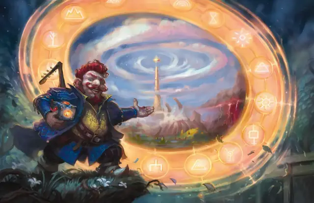

Врата
Gate
9 уровень, Призыв

Время сотворения Действие
Дистанция 60 футов
Компоненты В, С, М (бриллиант стоимостью не менее 5000 ЗМ)
Длительность Концентрация, вплоть до 1 минуты
Классы Волшебник, Жрец, Колдун, Чародей
Вы создаёте портал, соединяющий видимое вами в пределах дистанции незанятое пространство с конкретным местом на другом плане бытия. Портал представляет собой круглый проход диаметром от 5 до 20 футов на ваш выбор. Вы можете ориентировать портал в любом направлении. Портал существует, пока действует заклинание, и через него видно место назначения.
На каждом плане у портала есть передняя и задняя сторона. Пройти в портал можно только через его переднюю часть. Всё, что входит в переднюю часть портала, мгновенно перемещается на другой план, появляясь в ближайшем к порталу незанятом пространстве.
Божества и другие планарные правители могут предотвращать появление порталов, создаваемых этим заклинанием, в их присутствии или где угодно в пределах их владений.
Когда вы сотворяете это заклинание, вы можете назвать имя конкретного существа (псевдоним, титул или прозвище не подходят). Если это существо находится на другом плане бытия, портал открывается непосредственно рядом с ним и переносит это существо в ближайшее к вашей части портала незанятое пространство. Вы не обретаете силы над этим существом, и оно может действовать на усмотрение Мастера. Оно может уйти, может напасть на вас, а может помочь вам.